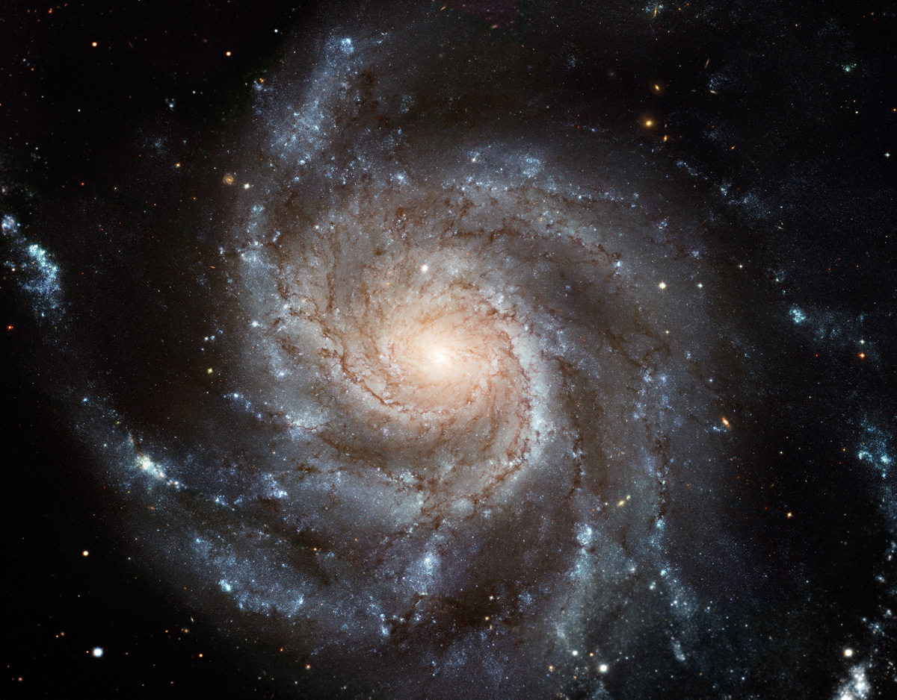

Our Milky Way is one example of a broad class of galaxies defined by the
presence of spiralnd a arms. These galaxies resemble giant rotating pinwheels with a pancake-like
disk of stars acentral bulge or tight concentration of stars.
Spiral galaxies are surrounded by halos, mixtures of old stars, star
clusters, and dark matter – invisible material that does not emit or reflect light but still
as a gravitational pull on other matter. The youngest stars form in gas-rich arms, while
older stars can be found throughout the disk and within the bulge and halo.

Elliptical Galaxies
Elliptical galaxies have shapes that range from completely round to oval.
They are less common than spiral galaxies.
Unlike spirals, elliptical galaxies usually contain little gas and dust and
show very little organization or structure. The stars orbit around the core in random directions
and are generally older than those in spiral galaxies since little of the gas needed to form new
stars remains. Scientists think elliptical galaxies originate from collisions and mergers with
spirals.
Lenticular Galaxies
Lenticular galaxies are a kind of cross between spirals and ellipticals.
They have the central bulge and disk common to spiral galaxies but no arms. But like
ellipticals, lenticular galaxies have older stellar populations and little ongoing star
formation.
Scientists have a few theories about how lenticular galaxies evolved.
One idea suggests these galaxies are older spirals whose arms have faded. Another proposes
that lenticulars formed from mergers of spiral galaxies.
Irregular Galaxies
Irregular galaxies have unusual shapes, like toothpicks, rings, or even little
groupings of stars. They range from dwarf irregular galaxies with 100 million times the Sun’s mass to
large ones weighing 10 billion solar masses.
Irregular galaxies born from galaxy interactions or collisions typically host a mix
of older and younger stars, depending on the characteristics and composition of the original galaxies.
Irregular galaxies may also hold significant amounts of gas and dust – essential ingredients for making
new stars.
Seyfert Galaxies
Seyfert galaxies, first identified in 1943 by American astronomer Carl Seyfert,
are the most common active galaxies and also exhibit the lowest energies. All Seyferts look like
normal galaxies in visible light, but they emit considerable infrared radiation. When observed in
the infrared, some reveal bright emission from the donut-shaped torus. Some also emit X-rays. Seyfert
galaxies tend to have lower radio luminosities, although some produce radio jets.
Scientists divide Seyferts into two classes. Type I Seyfert galaxies display
unusual features in their visible light that imply rapid motion near the accretion disk. Type II
Seyferts show features that imply much slower motion. However, this distinction may result from
different viewing angles into the centers of these galaxies.
Any feedback is appreciated. Please leave your thoughts here.